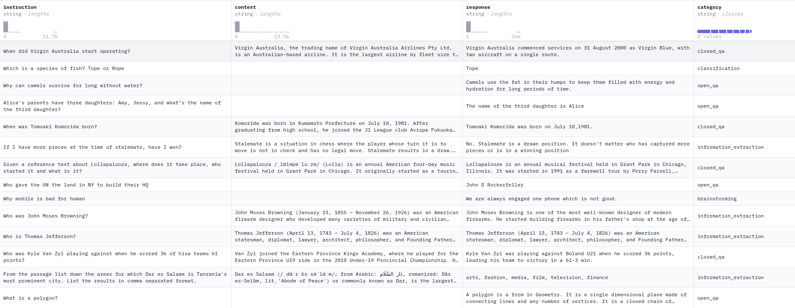
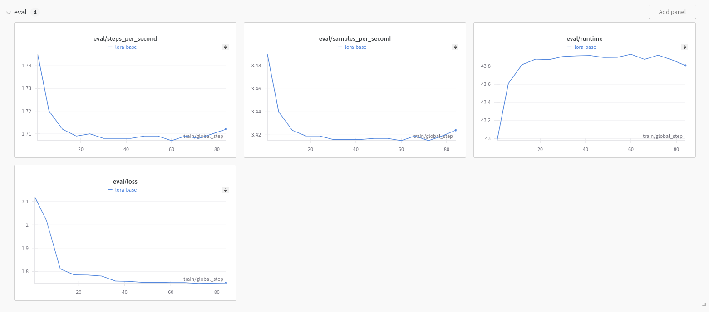

Intro
I’ve recently been taking the Mastering LLMs course by Hamel Husain and Dan Becker, one of their suggestions was to document our journey in order to supplement the learning process
In this blog entry, I will walk you through on of my first LLM fine-tuning experiment(s), with a bit of commentary here and there.
Setup
TinyLlama, our LLM of choice, is the smallest LLM I could find; which is more than enough to get our feet wet with fine-tuning. You can find it here on HuggingFace.
Our dataset, will be dolly-15k by Databricks, find it here.
Lastly, our training library of choice is none other than Axolotl. Axolotl is one of the easiest methods to perform fine-tuning, it’s a wrapper around HuggingFace libraries such as trl and peft (don’t panic if you don’t know what these are yet) and allows you to configure your entire training run through one config file. Install it using the instructions here. After you’re done installing it, you should find an axolotl directory wherever you’re at in your file system.
I used JarvisLabs to perform my fine-tuning experiments since I don’t have a powerful enough GPU.
We’re going to need a HuggingFace account for this, and ideally a Weights & Biases account; so create those if you don’t have them already.
Installs
All of the packages along with their versions are stated in the Axolotl requirements.txt, we will just need to install two more.
pip install datasets "huggingface_hub[cli]"API Keys
We’re going to push our trained model and dataset to HuggingFace, and we’ll also track our fine-tuning runs with W&B, so we’re going to need our API keys for each of those.
For HF, go to your profile by clicking your avatar at the upper right corner of the screen, Settings -> Access Tokens -> New Token. Create one, give it write permissions and copy it. Then in the terminal run huggingface-cli login, paste your token and hit Enter. To verify that you’re logged in, you can run huggingface-cli whoami.
For W&B, head to the authorize page, and copy your key from there.
Preprocessing
Now would be a good time to check the data for yourself, HuggingFace offers a superb dataset viewer.

We can then load the dataset:
from datasets import load_dataset, concatenate_datasets
dataset = load_dataset("databricks/databricks-dolly-15k", split="train")
print(dataset)
print(dataset[0])We can see that the dataset has about 15k rows, each row has an instruction, context, response, and an extra category column. The instruction is what we prompt our model with, the context is any additional information we might plug into our prompt so that our model will use it to answer our query (you don’t have to have inputs for all of the rows), and the response is what we expect back from our model. Now 15k rows is a bit of an overkill for our first fine-tune, so we’re going to sample the data. To do this we’re going to sample 1k rows from each of the general_qa, closed_qa, and open_qa categories.
# Filter the dataset for 'general_qa' and 'closed_qa'
general_qa_dataset = dataset.filter(lambda example: example['category'] == 'general_qa')
closed_qa_dataset = dataset.filter(lambda example: example['category'] == 'closed_qa')
open_qa_dataset = dataset.filter(lambda example: example['category'] == 'open_qa')
# Sample 1000 rows from each filtered dataset
general_qa_sample = general_qa_dataset.shuffle(seed=42).select(range(1000))
closed_qa_sample = closed_qa_dataset.shuffle(seed=42).select(range(1000))
open_qa_sample = open_qa_dataset.shuffle(seed=42).select(range(1000))
assert general_qa_sample.features.type == closed_qa_sample.features.type == open_qa_sample.features.type
# Combine the two samples into a single dataset
combined_dataset = concatenate_datasets([general_qa_sample, closed_qa_sample, open_qa_sample])
# Verify the result
print(combined_dataset)As an extra step, we’re going to rename our dataset columns, we’ll see why later.
combined_dataset = combined_dataset.rename_column("context", "input")
combined_dataset = combined_dataset.rename_column("response", "output")Now we are ready to push our sampled dataset to our HuggingFace.
combined_dataset.push_to_hub("kareemamrr/databricks-dolly-3k")Configuration
Now for fine-tuning. As previously mentioned, Axolotl allows us to completely configure any part of our fine-tuning process using one configuration file, and it provides us with ready config files for most popular models. The one we’ll be using is axolotl/examples/tiny-llama/lora.yml. This file contains config parameters for the base model we’ll pull from HuggingFace, the tokenizer, LoRA/QLoRA parameters and much more. Since Axolotl provides us with pretty reasonable defaults to start with, we’ll only ammend a few sections.
Base Model
base_model: TinyLlama/TinyLlama-1.1B-intermediate-step-1431k-3T
model_type: LlamaForCausalLM
tokenizer_type: LlamaTokenizerDataset
datasets:
- path: <your_hf_username>/databricks-dolly-15k
type: alpaca
dataset_prepared_path:
val_set_size: 0.05
output_dir: ./outputs/lora-outHF repo
hub_model_id: <username/repo_id>W&B Runs
wandb_project: <project_name>
wandb_entity: <your_username>
wandb_name: <optional_run_name>Notice how we specify our dataset type as alpaca. This is actually to tell Axolotl to format our dataset rows into the Alpaca prompt template. A prompt template is just a way to organize an instruction and its response and optionally its input, into a predetermined format so that the LLM learns; that’s why we renamed our dataset columns earlier to the Alpaca column names.
Fine-tuning
Finally, we can fine-tune. This is the easiest step. It is recommended we first run:
CUDA_VISIBLE_DEVICES="" python -m axolotl.cli.preprocess examples/tiny-llama/lora.ymlso that Axolotl preprocesses our data according to the dataset type (prompt template) we specified in our config file. An example result would be:
<s> Below is an instruction that describes a task, paired with an input that provides further context. Write a response that appropriately completes the request.
### Instruction:
Identify the odd one out.
### Input:
Twitter, Instagram, Telegram
### Response:
The odd one out is Telegram. Twitter and Instagram are social media platforms mainly for sharing information, images and videos while Telegram is a cloud-based instant messaging and voice-over-IP service.</s>To begin the actual fine-tune, run:
accelerate launch -m axolotl.cli.train examples/openllama-3b/lora.ymlIn about 10 seconds, the shell will prompt you to enter your W&B key that you got earlier, paste it in to track your run.
This step can take a while depending on the machine you’re using. While it is running, we can check on how our model’s doing through W&B.

Inference
After you’re done fine-tuning, all model related files should be up on your HuggingFace. To you use our model:
from peft import AutoPeftModelForCausalLM
from transformers import AutoTokenizer
model_id='<username/repo_id>'
model = AutoPeftModelForCausalLM.from_pretrained(model_id).cuda()
tokenizer = AutoTokenizer.from_pretrained(model_id)We will need an extra piece of code to inject our dataset rows into a prompt template, similar to what Axolotl did automatically for us:
def prompt_with_inp(inst, inp):
return f"""Below is an instruction that describes a task, paired with an input that provides further context. Write a response that appropriately completes the request.
### Instruction:
{inst}
### Input:
{inp}
### Response:
"""
def prompt_wo_inp(inst):
return f"""Below is an instruction that describes a task, write a response that appropriately completes the request.
### Instruction:
{inst}
### Response:
"""and lastly a wrapper function to return the response:
def prompt_tok(inst, inp=None):
if inp is None:
_p = prompt_wo_inp(inst)
else:
_p = prompt_with_inp(inst, inp)
input_ids = tokenizer(_p, return_tensors="pt", truncation=True).input_ids.cuda()
out_ids = model.generate(input_ids=input_ids, max_new_tokens=500, do_sample=False)
ids = out_ids.detach().cpu().numpy()
return tokenizer.batch_decode(ids, skip_special_tokens=False)[0]We can then try our model:
inst = "Alice's parents have three daughters: Amy, Jessy, and what’s the name of the third daughter?"
out = prompt_tok(inst)
print(out.strip())inst = "Who was boxer John Baldwin"
inp = "Known as 'The Mad' Baldwin, he turned pro in 1970 and lost a decision to Marvin Hagler in 1975. In 1977 he took on Rocky Mosley Jr in the ill-fated U.S. Championship Tournament, but lost via K.O. In 1978 he lost a decision to Marvin Johnson, and retired a year later."
out = prompt_tok(inst, inp)
print(out.strip())